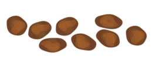
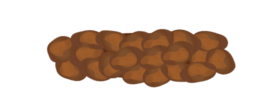
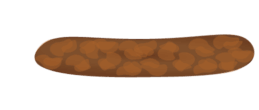
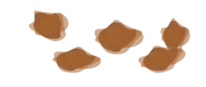

Die Bristol-Stuhlformen-Skala
Nach der Bristol-Stuhlformen-Skala werden sieben Stuhltypen unterschieden, wobei die Passagezeit von Typ 1 (bis zu 100 Stunden) bis zu Typ 7 (etwa 10 Stunden) abnimmt:
Einzelne, feste Kügelchen

Wurstartig, klumpig

Wurstartig mit rissiger Oberfläche

Wurstartig mit glatter Oberfläche
Einzelne weiche, glattrandige Klümpchen

Einzelne weiche Klümpchen mit unregelmäßigem Rand

Flüssig, ohne feste Bestandteile
Die Typen 1 und 2 weisen auf eine Verstopfung hin, die Typen 5 bis 7 auf Durchfall. Die Typen 3 und 4 gelten als „Idealstuhl“, der leicht auszuscheiden ist und auf keine Erkrankungen hinweist.
Quelle: Wikipedia🔗